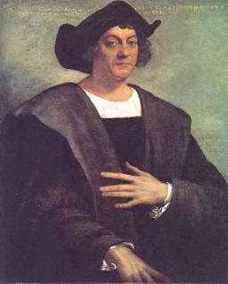
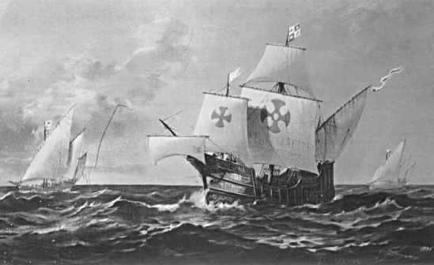
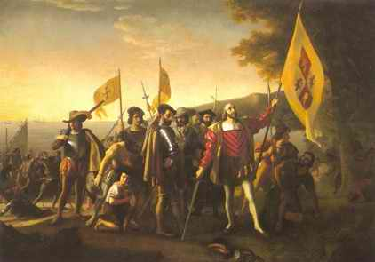

9 CHRISTOPHER COLUMBUS 1451-1506
Colombus, dalam upaya
mencari jalan dari Eropa ke Timur, tak sengaja menemui benua
Amerika yang membuatnya lebih berpengaruh dalam sejarah
dunia, di luar dugaannya sendiri. Penemuannya sekaligus
merupakan mahkota eksplorasi dan kolonisasi Dunia Baru dan
sekaligus pula merupakan tonggak penting dalam sejarah.
Colombus bagaikan membuka pintu bagi bangsa Eropa dua benua
untuk pemukiman baru, menyebar penduduk dan menyediakan
sumber kekayaan mineral dan isi bumi yang pada gilirannya
mengubah wajah Eropa. Berbarengan dengan itu, penemuannya
juga mengakibatkan hancurnya kebudayaan bangsa Indian. Dalam
jangka panjang, penemuan itu melahirkan satu bangsa baru di
benua belahan Barat, yang dengan amat cepatnya membedakan
diri dengan bangsa Indian selaku penduduk asli. Walhasil,
Colombus membawa perubahan besar bagi bangsa-bangsa di Dunia
Lama.
Garis besar kisah Colombus bukan masalah baru. Dia
dilahirkan di Genoa, Itali, tahun 1451. Tatkala berangkat
dewasa, dia menjadi nakhoda kapal dan seorang navigator yang
cekatan. Akhirnya Colombus yakin bukan mustahil menemukan
jalan lebih praktis ke daerah Asia di timur dengan cara
berlayar ke arah barat melintasi Samudra Atlantik dan dia
dengan tekun merintis tekadnya. Tentu saja niat besar ini
tidak bakal terlaksana tanpa biaya cukup. Karena itulah
Colombus membujuk Ratu Isabella I menyediakan anggaran untuk
ekspedisi percobaannya.
Kapalnya melepas sauh pelabuhan Spanyol tanggal 3 Agustus
1492. Melabuh pertama di Kepulauan Canary di lepas pantai
Afrika. Membongkar sauh di Kepulauan Canary tanggal 6
September dan berlayar laju arah ke barat. Sebuah pelayaran
yang bukan main panjang, sehingga tidak aneh jika para awak
kapal merasa ngeri dan kepingin balik saja. Colombus? Tidak!
Perjalanan mesti diteruskan, sekali layar terkembang pantang
digulung. Dan tanggal 2 Oktober 1492 bagaikan seutas sutera
hijau daratan tampak di haluan.
Colombus kembali ke Spanyol bulan Maret berikutnya dari
penjelajahan yang dahsyat itu disambut orang dengan penuh
penghormatan. Sesudah itu dia melakukan serentetan pelayaran
melintas Atlantik dengan harapan menjejakkan kaki di Cina
dan Jepang. Tetapi sia-sia! Colombus tetap bersiteguh pada
pikirannya bahwa dia sudah menemukan jalur perjalanan ke
Asia Timur jauh sebelum orang lain sadar.
Ratu Isabella menjanjikan Colombus jadi gubernur di pulau
mana pun yang ditemuinya. Tetapi, selaku administrator dia
betul-betul tidak becus sehingga dipecat dari jabatannya dan
dikirim pulang ke Spanyol dengan tangan terbelenggu. Tetapi,
sesampainya di Spanyol dia dibebaskan hanya saja tak pernah
diberi jabatan lagi. Kabar angin mengatakan Colombus mati
dalam kemiskinan tanpa ada dana apa pun. Tatkala kematiannya
di tahun 1506 --kabar lain lagi-- ada jugalah sedikit harta
kekayaannya.

Kapal "Nina," "Pinta" dan "Santa Maria" berlayar menuju
Dunia Baru
Jelas, pelayaran pertama Colombus merupakan perubahan
revolusioner bagi sejarah Eropa, dan malahan punya pengaruh
lebih besar bagi Benua Eropa. Anak-anak sekolah semua
menghafal tahun 1492 merupakan tahun penting. Walau begitu
masih ada banyak kemungkinan yang keberatan menempatkan nama
Colombus dalam urutan daftar buku ini.
Salah satu keberatan adalah karena bukannya Colombus
orang Eropa pertama yang menemukan Dunia Baru. Leif Ericson,
pelaut Viking, berabad-abad sebelum Colombus sudah
menjejakkan kaki di Benua Amerika dan bolehlah dipercaya
beberapa orang Eropa lain juga sudah menyeberangi Samudera
Atlantik di masa-masa antara Leif Ericson dan Colombus.
Dari sudut sejarah, Leif Ericson bukanlah tokoh penting.
Hal-hal menyangkut penemuannya belum pernah tersebar luas,
begitu pula tidak meninggalkan perubahan apa pun baik di
Amerika maupun Eropa. Sebaliknya, berita penemuan Amerika
oleh Colombus menyebar bagai kilat ke seluruh Eropa. Hanya
beberapa tahun sekembalinya Colombus, dan sebagai akibat
langsung dari penemuannya, banyak ekspedisi tambahan
berdatangan di Dunia Baru dan penaklukan serta kolonisasi
pun mulailah.
Seperti halnya tokoh-tokoh lain di dalam buku ini,
Colombus mudah terkena gangguan pelbagai komentar
seakan-akan apa yang ia lakukan orang lain juga lakukan
andaikata Colombus tidak pernah hidup di dunia. Eropa abad
ke-15 M berada dalam keadaan risau dan berkemelut: dunia
perdagangan berkembang, penjelajahan daerah baru tak
terelakkan. Bangsa Portugis nyatanya memang aktif amat
mencari arus jalan baru ke Timur, pada saat-saat menentukan
sebelum Colombus.

"Pendaratan Columbus"oleh John Vanderlyn
Adalah mungkin sekali Amerika cepat atau lambat ditemukan
oleh orang Eropa; bahkan mungkin sekali kalaulah ada
penundaan, saatnya tidak begitu lama. Tetapi perkembangan
berikutnya akan sangat jauh berbeda apabila Amerika
ditemukan --katakanlah tahun 1510-- oleh ekspedisi orang
Perancis atau Inggris dan bukannya tahun 1492 oleh Colombus.
Dengan dalih apa pun memang nyatanya Colombuslah orang yang
menemukan benua Amerika.
Kemungkinan keberatan ketiga adalah, bahkan sebelum
perjalanan Colombus banyak orang-orang Eropa abad ke-15 yang
sudah maklum bahwa sesungguhnya bumi ini bulat bentuknya.
Teori ini sudah diungkapkan oleh filosof Yunani berabad-abad
sebelumnya, dan pembenaran yang tak tergoyahkan dari
hipotesa Aristoteles sudah cukup untuk meyakinkan kaum
terpelajar Eropa di tahun 1400-an. Sementara itu, Colombus
sendiri tidak terkenal orang yang menunjukkan bahwa bumi ini
bulat. (Paling tidak, dia tidak berhasil melakukannya). Dia
masyhur dalam hal penemuan Dunia Baru, yang baik orang Eropa
abad ke-15 atau Aristoteles tak tahu menahu adanya benua
Amerika.
Akhlak Colombus tidaklah sepenuhnya dikagumi. Dia
terkenal kikir. Sifat inilah yang menyebabkan dia menghadapi
kesulitan memperoleh tunjangan dana dari Ratu Isabella
karena Colombus terlampau menampakkan keserakahannya tatkala
melakukan tawar-menawar. Juga --walaupun tidak pantas
menuduhnya menurut ukuran etika jaman sekarang-- dia
memperlakukan orang-orang Indian dengan kekejaman yang
sangat. Karena itu, daftar buku ini bukanlah terdiri dari
orang-orang yang paling bijak bestari dalam sejarah,
melainkan orang yang paling berpengaruh, dan dalam kerangka
ukuran ini Colombus menempati urutan nyaris paling atas.
Situs Web
- http://www.digitalhistory.uh.edu/learning_history/spain/spain_art.cfm
- http://www1.minn.net/~keithp/
- http://www.evgschool.org/Columbus's%20Sailing%20Ships.htm
|